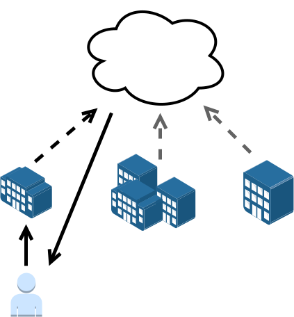

Discovering Indoor Environments and Positioning Systems
Maxim Van de Wynckel
Web & Information Systems Engineering LabVrije Universiteit Brussel
About me

- Maxim Van de Wynckel
- E-mailmvdewync@vub.be
- Websitehttps://maximvdw.be
- PositionResearcher at VUB
- InterestsIndoor positioning systems, linked data, and interoperability of location data
Current state of geospatial data
Outdoor data

Indoor data
Current state of geospatial data
Outdoor data
Indoor data
Current state of positioning systems
Geospatial-centric service discovery
The future of geospatial services lies in its discovery through the very locations it represents, rather than predefined services.

Geospatial-centric service discovery ...
Challenge 1 of 3
How to discover services in a location without relying on a discovery service?
Geospatial-centric service discovery ...
Challenge 2 of 3
How to interface with the discovered service(s)?
Geospatial-centric service discovery ...
Challenge 3 of 3
How to ensure ownership and independence?
Local data discovery
Find data locally at a particular location
Global data discovery
Find data globally about a particular location

For more information, visit the FOSDEM 2022 talk of OpenHPS.

dbr:Some_Unversity a ssn:Deployment .
<deployment/building_a> a poso:IndoorDeployment, geosparql:Feature ;
rdfs:label "Building A"@en ;
geosparql:hasGeometry [
a geosparql:Geometry ;
geosparql:asWKT "..."^^geosparql:wktLiteral ] .
<system/OPS> a poso:LocationBasedService ;
rdfs:label "Outdoor campus positioning"@en ;
ssn:hasSubSystem posoc:GPS ;
ssn:hasDeployment dbr:Some_University .
<system/IPS> a poso:IndoorPositioningSystem ;
rdfs:label "Indoor campus positioning"@en ;
ssn:hasDeployment <deployment/building_a> ;
ssn:implements posoc:KNNFingerprinting .
<system/CampusPositioning> a poso:IntegratedPositioningSystem ;
rdfs:label "Hybrid campus positioning system"@en ;
ssn:hasSubSystem <system/OPS>, <system/IPS> ;
ssn:implements posoc:WeightedAccuracyFusion .
@openhps/rdf
- RDF data model for OpenHPS
- POSO integration
- Serialisation and deserialisation
const position = new GeographicalPosition();
console.log(RDFSerializer.serialize(position));
@openhps/solid
- Solid storage and access control
- Solid as a communication broker

SemBeacon Bluetooth Specification
BLE 4.X

SemBeacon Bluetooth Specification
Flags
Based on UriBeacon, Bluetooth IPS and Eddystone frames
| Bit (MSB) |
Description |
Example |
| 0 |
Indicates if the beacon has a position. |
0 = Unsure, 1 = Yes |
| 1 |
Indicates if the beacon is private. |
0 = Public, 1 = Private |
| 2 |
Indicates if the beacon is attached to a moving object. |
0 = No, 1 = Yes |
| 3 |
Indicates if the beacon has a positioning system. |
0 = No, 1 = Yes |
| 4 |
Indicates if the beacon has telemetry data. |
0 = No, 1 = Yes |
| 5 - 7 |
Reserved for future use. |
|
SemBeacon Bluetooth Specification
BLE 5.X

SemBeacon Mobile Application
- Scans and Simulates SemBeacon, iBeacon, AltBeacon and Eddystone
- Extracts and visualises SemBeacon encoded information
- Implements HTTP caching and namespace mapping to environments
Contributing and Roadmap
POSO ontology
- Use cases for the POSO ontology usage \ https://github.com/OpenHPS/POSO/issues
- Examples of POSO to describe positioning systems
- Feedback on the current ontology design (1.1)
Contributing and Roadmap
SemBeacon
- nRF52 library
- Mobile application editor
Conclusion and Future Work
![](data:image/svg+xml,%3Csvg%20xmlns%3D%22http%3A%2F%2Fwww.w3.org%2F2000%2Fsvg%22%20viewBox%3D%220%200%2045%2045%22%20shape-rendering%3D%22crispEdges%22%3E%3Cpath%20fill%3D%22%23ffffff%22%20d%3D%22M0%200h45v45H0z%22%2F%3E%3Cpath%20stroke%3D%22%23000000%22%20d%3D%22M4%204.5h7m1%200h1m1%200h1m2%200h1m1%200h1m4%200h1m1%200h1m1%200h1m3%200h1m1%200h7M4%205.5h1m5%200h1m1%200h4m2%200h4m1%200h1m1%200h2m1%200h4m2%200h1m5%200h1M4%206.5h1m1%200h3m1%200h1m1%200h2m1%200h1m6%200h2m2%200h1m1%200h3m1%200h1m1%200h1m1%200h3m1%200h1M4%207.5h1m1%200h3m1%200h1m2%200h1m1%200h1m2%200h5m1%200h1m1%200h2m6%200h1m1%200h3m1%200h1M4%208.5h1m1%200h3m1%200h1m2%200h1m1%200h5m3%200h1m1%200h3m2%200h1m3%200h1m1%200h3m1%200h1M4%209.5h1m5%200h1m1%200h1m1%200h1m1%200h1m5%200h3m1%200h1m4%200h2m1%200h1m5%200h1M4%2010.5h7m1%200h1m1%200h1m1%200h1m1%200h1m1%200h1m1%200h1m1%200h1m1%200h1m1%200h1m1%200h1m1%200h1m1%200h7M12%2011.5h3m2%200h1m1%200h1m1%200h1m2%200h5m1%200h1m1%200h1M6%2012.5h3m1%200h1m1%200h4m1%200h1m1%200h10m4%200h3m2%200h3M4%2013.5h4m3%200h3m2%200h3m2%200h2m1%200h1m1%200h1m2%200h4m1%200h1m2%200h1m1%200h1M6%2014.5h1m1%200h1m1%200h3m6%200h2m1%200h1m3%200h1m2%200h2m3%200h1m4%200h2M4%2015.5h4m6%200h1m1%200h1m6%200h2m3%200h1m1%200h1m1%200h1m1%200h1m4%200h1M4%2016.5h1m1%200h1m2%200h2m1%200h1m1%200h2m3%200h3m1%200h2m2%200h1m1%200h2m2%200h4m1%200h2M4%2017.5h1m3%200h2m2%200h1m3%200h1m1%200h2m4%200h1m1%200h2m1%200h2m1%200h2m1%200h1m1%200h2M5%2018.5h1m3%200h3m4%200h3m2%200h3m5%200h3m2%200h4m1%200h2M4%2019.5h1m1%200h3m4%200h1m1%200h1m1%200h4m2%200h2m1%200h1m3%200h2m1%200h1m5%200h2M6%2020.5h1m3%200h3m3%200h1m1%200h6m2%200h1m2%200h3m1%200h2m1%200h1m1%200h2M4%2021.5h2m2%200h1m3%200h2m1%200h2m1%200h1m2%200h1m2%200h1m5%200h1m4%200h1m1%200h1M4%2022.5h1m3%200h3m3%200h2m1%200h3m4%200h2m1%200h2m2%200h1m1%200h3m1%200h4M6%2023.5h1m1%200h2m2%200h9m1%200h1m1%200h1m1%200h1m1%200h1m1%200h1m1%200h1m1%200h1m4%200h1M6%2024.5h1m3%200h4m2%200h1m5%200h2m3%200h1m5%200h6M4%2025.5h3m1%200h2m2%200h2m3%200h1m1%200h1m4%200h2m2%200h2m3%200h1m1%200h1m1%200h1m2%200h1M6%2026.5h1m1%200h1m1%200h1m1%200h5m2%200h5m1%200h1m2%200h4m1%200h1m3%200h1m2%200h1M4%2027.5h1m7%200h2m4%200h1m1%200h1m3%200h1m3%200h2m5%200h1m4%200h1M6%2028.5h1m2%200h4m1%200h1m1%200h1m1%200h1m3%200h1m2%200h4m1%200h1m1%200h2m1%200h4m1%200h1M4%2029.5h2m1%200h1m3%200h1m1%200h1m1%200h1m1%200h1m1%200h6m1%200h1m4%200h1m2%200h1m1%200h3M4%2030.5h1m1%200h5m1%200h1m2%200h2m1%200h2m1%200h2m1%200h2m1%200h3m1%200h2m1%200h1m2%200h1m2%200h1M4%2031.5h1m2%200h3m2%200h1m1%200h3m1%200h1m2%200h3m1%200h1m1%200h1m2%200h2m1%200h1m4%200h2M4%2032.5h1m2%200h2m1%200h2m1%200h1m1%200h4m1%200h1m3%200h1m2%200h1m1%200h8m1%200h3M12%2033.5h2m1%200h1m1%200h1m3%200h2m2%200h1m1%200h2m2%200h2m3%200h1M4%2034.5h7m2%200h4m1%200h2m2%200h1m3%200h1m1%200h2m2%200h1m1%200h1m1%200h2m1%200h2M4%2035.5h1m5%200h1m2%200h1m1%200h3m2%200h3m2%200h2m4%200h2m3%200h1m2%200h2M4%2036.5h1m1%200h3m1%200h1m1%200h3m2%200h2m3%200h2m1%200h2m2%200h8m1%200h3M4%2037.5h1m1%200h3m1%200h1m1%200h4m4%200h2m1%200h3m2%200h1m3%200h1m1%200h3m2%200h2M4%2038.5h1m1%200h3m1%200h1m1%200h3m2%200h1m2%200h1m2%200h1m7%200h1m1%200h1m1%200h1m4%200h1M4%2039.5h1m5%200h1m3%200h1m1%200h1m3%200h1m7%200h1m2%200h3m1%200h2m3%200h1M4%2040.5h7m2%200h3m2%200h2m1%200h4m1%200h1m1%200h1m1%200h1m2%200h1m1%200h6%22%2F%3E%3C%2Fsvg%3E%0A)